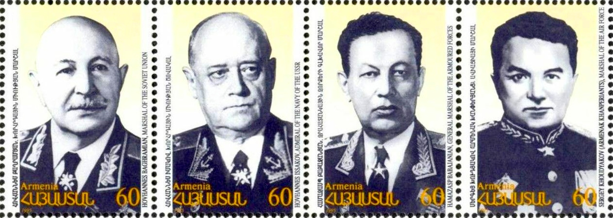

Six special military divisions were formed in Soviet Armenia in 1941–42,
partly because so many draftees from the republic could not understand Russian. These six divisions
alone had more than 67,000 soldiers. Five of them, the 89th, 409th, 408th, 390th, and 76th
Divisions, would have a distinguished war record

While the sixth was ordered to stay in Armenia to guard the republic's
western borders against a possible incursion by neighboring Turkey. The 89th Tamanyan Division,
composed of ethnic Armenians, distinguished itself during the war. Led by Major General Nver
Safaryan, it fought in the Battle of Berlin and entered Berlin. Many Armenian soldiers also served
in two other multi-ethnic divisions. They came not only from Soviet Armenia, but also from the other
Soviet republics and other countries with considerable Armenian minorities
Over the course of the war, the Tamanyans liberated more than 900 settlements. Under the command of Major General Nver Safaryan, the 89th Division was among the first ones to cross the border of the USSR, passing through the entire territory of Poland and entering the capital of the Third Reich in the spring of 1945. The division defeated the German garrison in Berlin, and was awarded the Order of Kutuzov Second Class for its accomplishments. In Balaklava, where the mass grave of the 89th Division soldiers is located, the Armenian Soviet Socialist Republic erected a memorial monument dedicated to Tamanyans.
...
76th Rifle Division
The 76th Rifle Division (51st Guards División “Vitebsk” Order of Lenin the Red Banner named after K. E. Voroshilov) was formed in May of 1922 in Yerevan. Marshals Ivan Baghramyan and Hamazasp Babajanyan served in this division. At the beginning of the War, the Division carried out special operations on the territory of Iran, then participated in fights from Stalingrad to the Baltic states and Belarus, liberating about a thousand settlements.89th Infantry Rifle Tamanyan Division
The renowned 89th Infantry Rifle Tamanyan Division (Order of the Red Banner, Order of the Red Star) was formed in Yerevan in December 1941. The division began its military path from the foothills of the Caucasus and participated in the liberation of Sevastopol, Balaklava, Kerch. For the heroism demonstrated on Taman Peninsula, the division was given the honorary name “Tamanyan”.Over the course of the war, the Tamanyans liberated more than 900 settlements. Under the command of Major General Nver Safaryan, the 89th Division was among the first ones to cross the border of the USSR, passing through the entire territory of Poland and entering the capital of the Third Reich in the spring of 1945. The division defeated the German garrison in Berlin, and was awarded the Order of Kutuzov Second Class for its accomplishments. In Balaklava, where the mass grave of the 89th Division soldiers is located, the Armenian Soviet Socialist Republic erected a memorial monument dedicated to Tamanyans.
Armenian 390th Infantry Division
The Armenian 390th Infantry Division, established in September 1941, also participated in the battles for Kerch. Members of the division demonstrated great courage and fortitude in Crimea as well.408th Infantry Division
The 408th Infantry Division was formed in August 1941. Fighters of the Division battled at Novorossiysk and Tuapse. In October 1942, despite being completely surrounded, the Division managed to withstand numerous attacks by enemy forces and break through the encirclement, and declared victory on the Elbe.409th Rifle Division
The 409th Rifle Division of “Kirovograd-Bratislava” (Order of Red Banner Order of Bogdan Khmelnitsky, second Class), was formed in August, 1941. Up until December 1942, it defended the state border from a possible invasion from Turkey. Starting 1943, it participated in battles in the Chechen-Ingush Autonomous Soviet Socialist Republic, Stavropol and Krasnodar, as well as in the battles for the liberation of Hungary. The division is most prominently known, however, for the courage it demonstrated in battles for the liberation of Bratislava. At the end of the war, the members of Division paraded victoriously into Vienna.The 261st Rifle Division
The 261st Rifle Division was formed in fall of 1942. Its task was to guard the Soviet-Turkish state border. Along with the national military troops, eight divisions were established or expanded in Armenia. In addition, during the years of World War II, over 85 thousand recruits were trained in Armenia. Since the territory of Armenia was equated with the frontline zone and a significant part of the state border was passing through its territory, special attention was paid to staff training against any potential invasion attempts by the enemy. Armenian soldiers participated in all major battles and military operations of the Great Patriotic War....